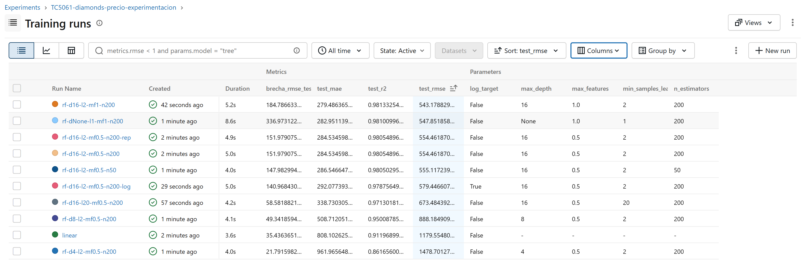
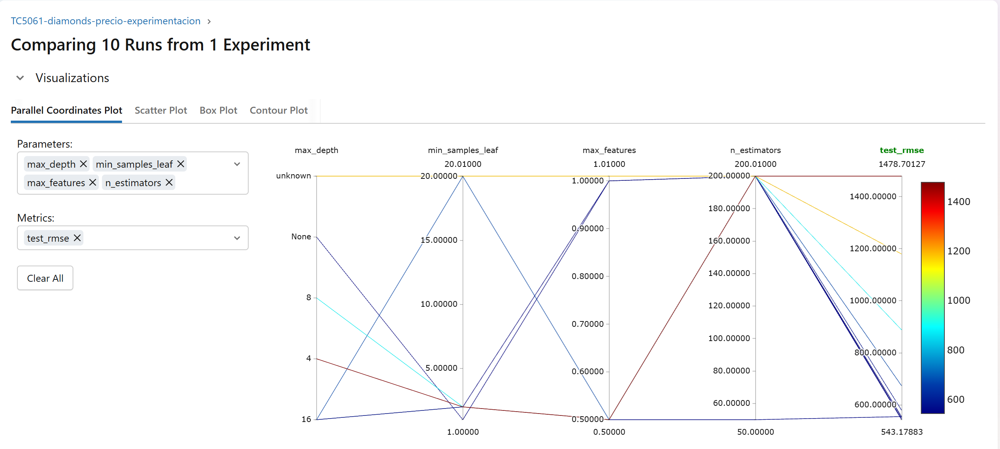
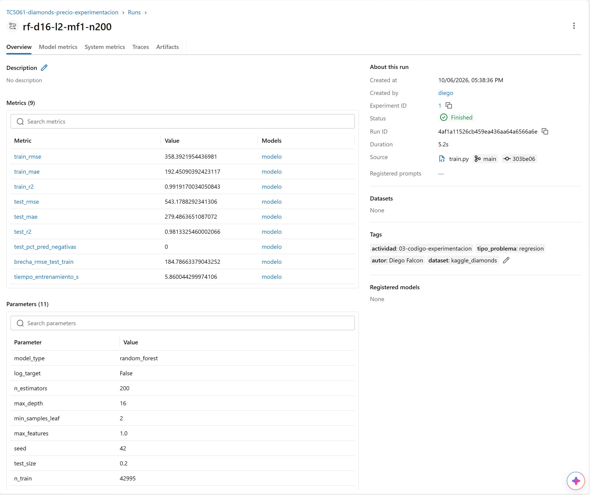
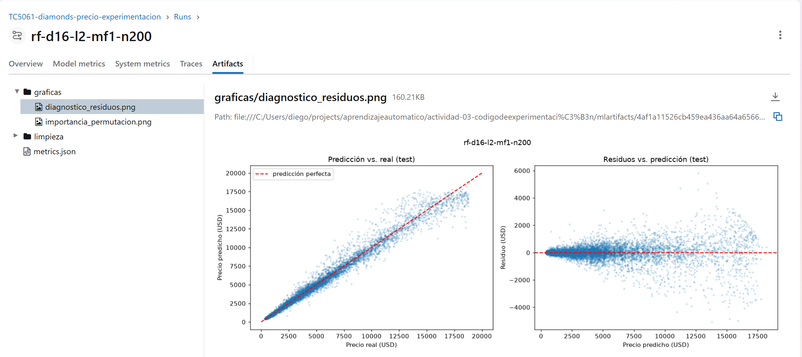

INSTITUTO TECNOLÓGICO Y DE ESTUDIOS
SUPERIORES DE MONTERREY
Actividad Individual. Código de experimentación base con MLflow
Diego Falcón Costilla A01139580
Operaciones de aprendizaje automático
El código está en el repositorio github.com/diegofalconcostilla/tc5061-experimentacion-mlflow. El modelo base de la semana anterior predice el precio en USD de un diamante a partir de su peso y de su calidad de corte, color y claridad (dataset Diamonds de Kaggle). La lógica de modelado se movió a src/train.py, organizado en funciones de una sola responsabilidad: load_data, clean_data (las reglas de limpieza del notebook), split_data (división estratificada por peso), build_pipeline, evaluate y main, que orquesta la corrida. El notebook notebooks/exploracion_diamonds.ipynb quedó sólo con la exploración y la justificación de la limpieza. Como la regresión lineal no tiene hiperparámetros y mostró subajuste, el script entrena por defecto un Random Forest y conserva el baseline lineal con --model linear. Se exponen --n-estimators, --max-depth, --min-samples-leaf, --max-features, --log-target y --seed, todos con valor por defecto y ayuda en --help.
python src/train.py # valores por defecto
python src/train.py --n-estimators 200 --max-depth 16 --min-samples-leaf 2 \
--max-features 1.0 --seed 42 # mejor corrida
.\run_experiments.ps1 # las diez corridas
mlflow ui --backend-store-uri sqlite:///mlflow.db
Cada corrida queda en el experimento TC5061-diamonds-precio-experimentacion y registra los hiperparámetros, la semilla y el tamaño de los conjuntos con log_param; RMSE, MAE y R² en entrenamiento y prueba, la brecha entre ambos, el porcentaje de predicciones negativas y el tiempo de entrenamiento con log_metric; un metrics.json, dos gráficas y la bitácora de limpieza con log_artifact; y el pipeline completo con firma mediante mlflow.sklearn.log_model. La semilla se fija en random y numpy y se pasa como random_state a la división, al bosque y a la importancia por permutación. La corrida por defecto se ejecutó dos veces y sus métricas coinciden en todos los decimales, y al borrar la base de tracking y repetir las diez corridas se obtuvieron los mismos valores; sólo cambia el tiempo de entrenamiento. Las versiones de Python 3.12.6, MLflow 3.16.0, scikit-learn 1.9.1 y demás librerías están fijadas en requirements.txt.
Se partió de la configuración por defecto (200 árboles, profundidad 16, hoja mínima de 2 y la mitad de las variables por división) y se cambió un hiperparámetro a la vez, para atribuir cada diferencia a ese cambio. La Figura 1 muestra las diez corridas ordenadas por RMSE en prueba.
La mejor configuración fue rf-d16-l2-mf1-n200 (200 árboles, profundidad 16, hoja mínima de 2 y todas las variables en cada división), con un RMSE de 543 USD, un MAE de 279 USD y un R² de 0.981. Frente al baseline lineal reduce el RMSE 54 % y el MAE 65 %, y elimina las predicciones negativas, que en la regresión lineal eran 9.4 % del conjunto de prueba. La configuración sin límite de profundidad queda casi empatada en prueba (548), pero su RMSE de entrenamiento baja a 211 y la brecha con prueba casi se duplica (337 contra 185 USD), señal de que memoriza más sin generalizar mejor, y además tarda tres veces más en entrenar.
El hiperparámetro más influyente fue max_depth. Al pasar de 4 a 8 y a 16 niveles el RMSE cae de 1,479 a 888 y a 554 USD, una reducción de 63 %; con profundidad 4 el bosque incluso es peor que la regresión lineal, porque tiene muy pocas hojas para representar la relación curva entre peso y precio. En la Figura 2 se ve el mismo patrón: las líneas que llegan a los valores altos de test_rmse salen de las profundidades bajas. Le sigue min_samples_leaf, que al subir de 2 a 20 empeora el RMSE 21 % al suavizar demasiado el modelo. En cambio, max_features sólo aporta una mejora de 2 % y n_estimators casi no influye: con 50 árboles el RMSE apenas sube 0.1 % y el entrenamiento es 3.5 veces más rápido, por lo que en un entorno con restricciones de cómputo sería una opción razonable. Entrenar sobre el logaritmo del precio empeoró el RMSE 4.5 %, porque esta métrica está dominada por los diamantes caros y la transformación reparte el esfuerzo del modelo hacia los baratos. En la importancia por permutación de la mejor corrida, carat domina (permutarla eleva el RMSE en unos 5,600 USD), seguida de clarity (1,170) y color (770).
El ejercicio tiene limitaciones claras. Todas las corridas usan una única división train/test con la misma semilla, de modo que las diferencias pequeñas entre las cuatro mejores configuraciones (543 a 555 USD, alrededor de 2 %) podrían no ser significativas; haría falta validación cruzada o repetir con varias semillas para estimar su variabilidad. Además, la mejor configuración se eligió mirando el conjunto de prueba, lo que vuelve optimista su error; lo correcto sería seleccionar con un conjunto de validación y reservar la prueba para el final. El diseño de un factor a la vez no captura interacciones entre hiperparámetros, y el RMSE en USD no refleja el error relativo en diamantes pequeños, donde la transformación logarítmica podría resultar mejor. Finalmente, el experimento sólo registra el nombre del dataset y no un hash o versión del archivo, por lo que un cambio en el CSV no quedaría trazado en MLflow.

TC5061-diamonds-precio-experimentacion, ordenada por test_rmse, con las métricas y los hiperparámetros como columnas. Las corridas rf-d16-l2-mf0.5-n200 y rf-d16-l2-mf0.5-n200-rep tienen métricas idénticas.
max_depth, min_samples_leaf, max_features y n_estimators con test_rmse; las profundidades 4 y 8 producen los errores más altos.
rf-d16-l2-mf1-n200: nueve métricas, once parámetros, etiquetas y el modelo registrado (modelo) asociado a cada métrica.
metrics.json, con la vista previa de los residuos.